Two-team independent Q-learning on a predator–prey MPE, with a shared-trunk opponent-action auxiliary head reused as an opponent model for Monte-Carlo planning at evaluation time. Variants compared in a 3×3 paired-seed cross-play tournament (three seeds per variant). A second experiment studies static obstacles and a directional prey bonus.
Before the experiments: the environment and the shared training loop.
JaxMARL's MPE_simple_tag_v3. Three predators (team pred)
chase one prey (team prey) in a 2D continuous arena with two
non-interactive obstacles. Each agent picks one of five discrete actions per step
(stay / left / right / down / up). Episodes last 25 steps. Predators earn
+10 per capture; prey earns −10 per capture. The
environment is fully observable — every agent's observation already
contains relative positions of every other entity, so memory is not needed.
Stock JaxMARL shares one Q-network across all four agents with
vmap(…, in_axes=(None, …)). In an adversarial task that's fatal —
predator and prey gradients collide on the same parameters and cancel. The fix is
straightforward: one TrainState per team, two separate Q-networks, a
shared flashbax replay buffer, and split_teams(env) to route obs and
actions appropriately. Within a team, predators share network weights (they're
interchangeable), which improves sample efficiency about 3× compared to per-agent
parameters.
teams = {"pred": ["adversary_0", "adversary_1", "adversary_2"],
"prey": ["agent_0"]}
# per-team losses — no gradient crosstalk between teams
L_pred = MSE(Q_pred(s,a), r_pred + γ·max Q̄_pred(s',·)) # pred adam
L_prey = MSE(Q_prey(s,a), r_prey + γ·max Q̄_prey(s',·)) # prey adam
# shared replay, per-team batchesExperiment 1 was a single-seed RNN A/B between baseline IQL and opponent-aware IQL. Experiment 2 replaced random obstacle placement with a fixed geometry and added a directional prey bonus in an annulus around each obstacle, paired with behavior-level mining of the learned prey policy. Experiment 3 replaces the RNN with an MLP (the environment is fully observable, so memory contributes only wall-clock cost), reuses the trained opponent head as a one-step opponent model for Monte-Carlo planning at evaluation time, runs three seeds per variant, and evaluates the variants in a 3×3 paired-seed cross-play tournament.
Experiment 3 — MLP-IQL, opponent-aware
auxiliary, tree-expanded planning, 3×3 cross-play tournament.
Experiment 2 — static obstacles, CW/CCW
prey shaping, behavior mining.
Experiment 1 (archived) — single-seed RNN A/B
between baseline IQL and OA-IQL. Superseded by Experiment 3.
Questions: does an opponent-action auxiliary head shift the learned equilibrium under self-play? Does reusing the head as an opponent model for Monte-Carlo planning at evaluation amplify the shift? Is the effect symmetric between predator and prey?
Plain two-team IQL with an MLP Q-net. No opponent head. Eval = pick
argmax_a Q(obs, a) deterministically. Serves as the control.
net: iql_teams_mlp.py:40–55
team split: :76–80
train loop: :85–500
Same Q trunk, plus an auxiliary head that predicts the opponent team's next
action. Cross-entropy loss, coefficient 0.5, labels from replay (free).
Eval = argmax Q. The head is discarded at inference.
two-head net: iql_teams_oa_mlp.py:45–71
opp map opp_of: :103
loss + opp_acc: :279–321
Same OA-trained net, but eval replaces argmax Q with Monte-Carlo
rollout. The opp head becomes a one-step opponent model that drives a
K-sample, H-step lookahead through the real JaxMARL simulator. No extra training.
planner factory: planning_eval.py:86–175
root-action inject: :110–157
opp sampling: :135–142
obs ──▶ Dense(128) ──▶ ReLU ──▶ Dense(128) ──▶ ReLU ──┬──▶ Dense(action_dim=5) ──▶ Q-values │ └──▶ Dense(opp_n × action_dim) ──▶ opp-action logits │ └─ CE vs opp actions from replay (the auxiliary loss, weight 0.5)
Both heads read off a shared trunk. The CE on opp-action logits forces the trunk to encode features that are predictive of what the opponent is about to do — position-of-obstacle-relative-to-opponent, direction-of-approach, that kind of thing. Those features are also useful for Q-learning, so the Q-head improves incidentally. At training time the opp head is an auxiliary regularizer. At eval time (OA-plan variant) the same weights become an opponent model the planner samples from.
Per-agent (not joint) Monte-Carlo rollout (see planning_eval.py:86–175):
action_dim = 5 candidate root actions a_root:
K = 5 independent rollouts of horizon H = 3.a_root at t=0 and argmax Q after — root-action injection is the single line planning_eval.py:119.argmax Q throughout (coordinate descent).Categorical(softmax(opp_head(obs))) — see :135–142.wrapped_env.wrapped_step(), accumulating Σ γᵗ r — :142–157.V_leaf = max_a Q(s_H, a).K returns per root action → one score per candidate.argmax_root.
Per-agent coordinate descent is a deliberate trade-off. A joint-action planner
for the three predators would score 5³ = 125 candidates per decision; per-agent
scores only 5 × 3 = 15. The cost is that predator coordination is partially
collapsed into "each predator's independent best response given frozen
teammates," which — as the results show — matters.
H = 0 recovers greedy Q. H = 3 covers ~12% of a 25-step episode; with
γ = 0.9, γ³ ≈ 0.73, so the leaf bootstrap still contributes most of the value.
For each pair (pred_variant, prey_variant) we pair trained nets
by seed index (so each cell is within-training-distribution for both teams),
run 100 parallel 32-step eval episodes, and record captures / episode. The matrix
is then averaged over 3 seeds.
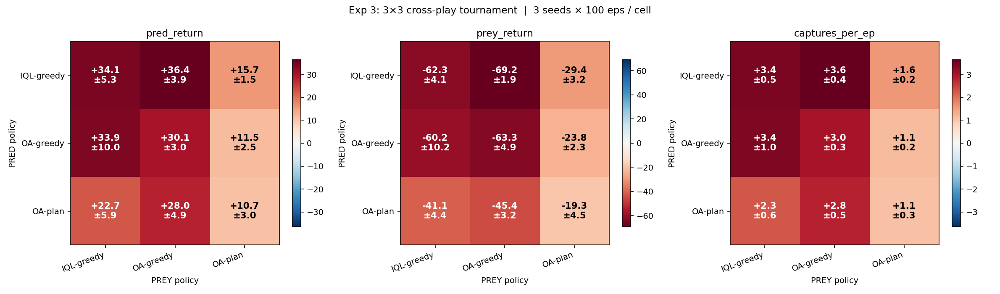
mean ± std over 3 seeds × 100 eval episodes. The full figure is
plots/exp3_tournament.png.
Read column-wise (down): the OA-plan prey column is uniformly the lowest
— 1.57, 1.15, 1.07 captures/ep — a ~2-capture reduction relative to the
other two prey columns, regardless of which predator policy it faces.
Read row-wise (across): the OA-plan predator row has the lowest average
— it's the worst pred variant across the board. Both effects hold well within error bars.
Same auxiliary objective on both teams. Prey benefits dramatically; predator barely. Adding planning on top amplifies the asymmetry: OA-plan prey dominates universally, OA-plan pred is worst among pred variants.
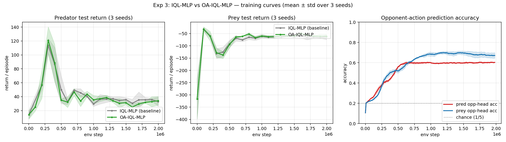
opp_acc :279–321 (_loss_fn)The opponent-modeling task is not symmetric, even though the loss is. The prey's opp head has to predict three predator actions per observation; the predator's opp head has to predict one prey action. Per step, the prey gets three times the CE gradient the predator gets. The prey ends up with a better opponent model, which the planner consumes — and so OA-plan prey plans better than OA-plan pred. The 7-percentage-point gap in classifier accuracy is the mechanism of the tournament outcome.
In a zero-sum-like game, predator return and prey return are shadows of each other. If both sides improve proportionally, the marginal training curve looks unchanged — nothing to see. Equilibrium shifts only become visible when you stress-test a policy against opponents it wasn't paired with during training — a cross-play tournament. The OA-greedy vs IQL-greedy difference in the training curves is under half a standard deviation. The same difference in the tournament (column-mean drop from ~3.4 to ~1.3 captures/ep when prey plans) is more than 3 std.
This is also a methodological point: if you only look at marginal training returns in a self-play setup, you'll systematically miss the kind of effect this experiment is about.
Two compounding reasons:
Fixing either would likely move OA-plan pred above IQL-greedy. Neither is a deep problem with the approach — both are engineering choices we made for wall-clock reasons.
A symmetric auxiliary objective produces an asymmetric effect in adversarial co-training, driven by an asymmetry in the classification signal each team receives. The side with the richer opponent-modelling task attains a better opponent classifier and a better planner derived from it. Neither side's marginal training return moves appreciably; the effect is observable only in cross-play.
A reward-engineering study with four conditions, three seeds each. A direction-only bonus around each obstacle induces a measurable CW or CCW bias in the learned prey policy. The narrower trajectory distribution is exploited by the coordinated predators: the prey's realised total return decreases despite collecting the positive per-step bonus.
Subclass SimpleTagMPE → SimpleTagStaticMPE (simple_tag_static.py:28–130). Two changes.
1: reset() pins the two obstacles to fixed positions
(0.5, 0.5) and (−0.5, −0.5) — :67–81. (Subclass rather than wrapper
because JaxMARL's auto-reset calls self.reset() directly.)
2: step_env() (:100–130) adds a per-step bonus to the prey's reward computed by
_circle_bonus :83–97:
bonus = coef · dir_sign · sign(v_prev × v_new) · 1[r_in ≤ ‖v_new‖ ≤ r_out]
v_prev = prey_pos_t − obstacle
v_new = prey_pos_{t+1} − obstacle
dir_sign = +1 (CCW) or −1 (CW)
coef = 0.1, r_in = 0.25, r_out = 0.6
The 2D cross product is positive for counter-clockwise motion around the obstacle,
negative for clockwise. The sign is extracted with sign() so that the
bonus depends only on direction, not speed. The annulus gate
r_in ≤ ‖v‖ ≤ r_out prevents the prey from parking on top of an obstacle
to farm. The bonus is summed over obstacles. Only the prey receives the bonus —
predator rewards are untouched, so the predator learning curve is a clean
cross-condition signal.
| Run | Obstacles | Shaping | Predator return ↑ | Captures / ep |
|---|---|---|---|---|
random_baseline |
randomized each reset | none | +33.12 | 3.3 |
static_baseline |
fixed at (±0.5, ±0.5) | none | +22.19 ± 5.97 | 2.2 |
static_ccw |
fixed | CCW prey bonus, r ∈ [0.25, 0.6] | +26.25 ± 2.76 | 2.6 |
static_cw |
fixed | CW prey bonus, same annulus | +28.23 ± 2.06 | 2.8 |
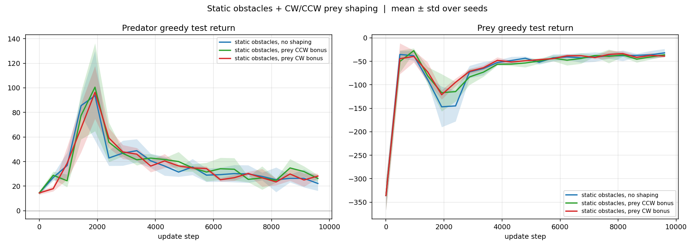
1. Static obstacles favor the prey. Removing obstacle randomness lets the prey memorize stable cover — predators lose ~1.1 captures/ep versus random.
2. CW / CCW shaping recovers most of that gap. Either direction of the annular bonus pushes predator captures from 2.2 back up to 2.6–2.8 / ep.
3. Shaping also collapses seed-to-seed variance (σ ≈ 6 → σ ≈ 2). The bonus regularizes the prey into a narrow family of policies.
The predator-return effect is real, but the why isn't in the reward curves — it's in the prey's actual behavior. For each (variant × seed) we roll out 64 parallel 32-step greedy episodes and record (a) the prey's 2D position every step and (b) the signed angular displacement around the nearest obstacle at every step. Implementation: exp2_behavior_mining.py — :60–116 rollout, :119–136 signed-angle math.
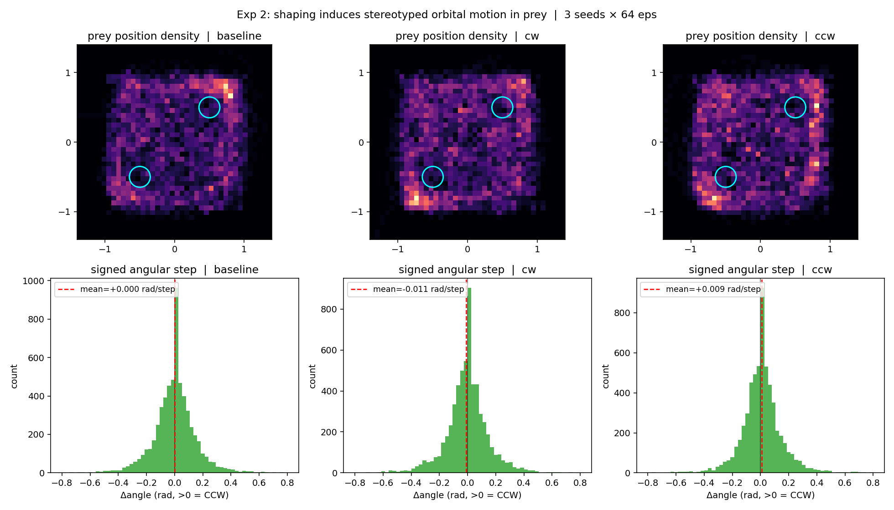
baseline concentrates near cover. cw and ccw
show visible orbital bands in the shaping annulus around each obstacle.
Bottom row: signed angular step per timestep (positive = CCW around
the nearest obstacle, negative = CW). baseline is symmetric around zero;
cw is biased negative; ccw is biased positive. Red dashed line
shows the mean.
| Variant | Mean Δangle (rad/step) | Δangle std | Direction |
|---|---|---|---|
baseline |
+0.0002 | 0.36 | ≈ symmetric |
cw |
−0.0108 | 0.37 | biased CW (sign matches shaping) |
ccw |
+0.0091 | 0.36 | biased CCW (sign matches shaping) |
The shaping rewards a behavioural property (directional orbital motion) rather than an outcome (capture avoidance). The learned prey policy satisfies the property, which compresses the prey's state distribution from a broad cover-and-evade manifold into a narrow CW/CCW orbital band. The coordinated predators exploit the narrower support: the prey's realised total return decreases despite collecting the positive per-step bonus, because the increase in capture rate outweighs the accumulated shaping reward.
The failure mode is adversarial to the designer's intent: the shaped property (direction, not speed or escape distance) is exactly the property the predators can pre-commit to intercepting.
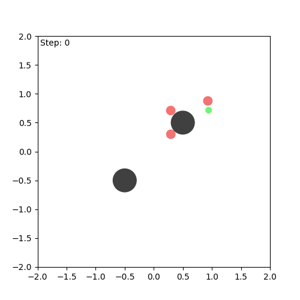
Each GIF is 150 steps = 6 auto-reset episodes chained together, greedy rollouts from seed 0 of the corresponding static variant.
The behavior-mining numbers above pool 192 episodes per (variant × seed). A
natural follow-up is to ask whether a single trajectory carries enough
policy identity to be classifiable on its own. The answer turns out to be no —
not at shape_coef = 0.1 and T = 50, with either
hand-crafted features or a learned trajectory encoder. This subsection records
what was tried and what the per-rollout signal actually is.
Implementation:
generate_trajectory_dataset.py,
verify_multimodality.py,
train_traj_vae.py,
verify_vae_modes.py.
Both datasets are T = 50 prey-only rollouts. Reading A
is the labelled multi-checkpoint set: 9 Exp 2 checkpoints (3 variants × 3 seeds)
× 100 episodes = 900 trajectories. Reading B is unlabelled:
static_baseline seed 0 × 900 episodes. Reading A asks whether
different policies produce visibly different per-trajectory distributions;
Reading B asks whether one policy is multi-modal under varying initial conditions.
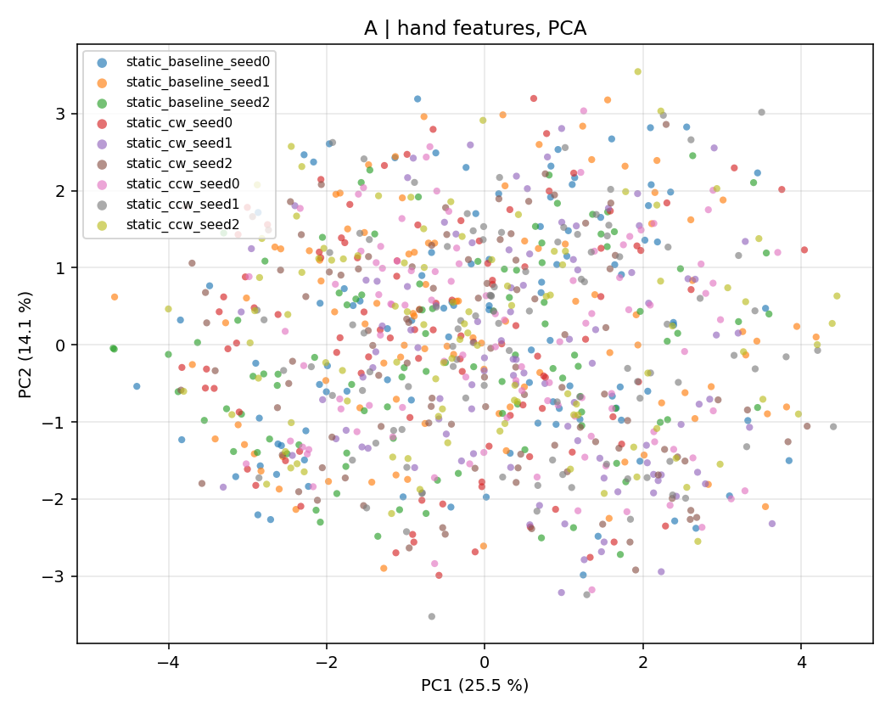
0.008 across the k = 2..9 sweep —
chance level. The 16 × 16 occupancy histogram (PCA-30 then GMM with diagonal
covariance) gives the same null result.
A small Flax MLP-VAE: encoder
(T·2) → 64 → 64 → (μ, log σ²) ∈ ℝ⁸, decoder
ℝ⁸ → 64 → 64 → (T·2), ELBO with KL-annealed
β over the first 2 k of 8 k Adam steps. Trained on Reading A.
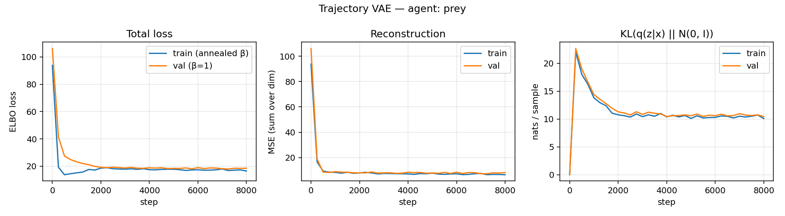
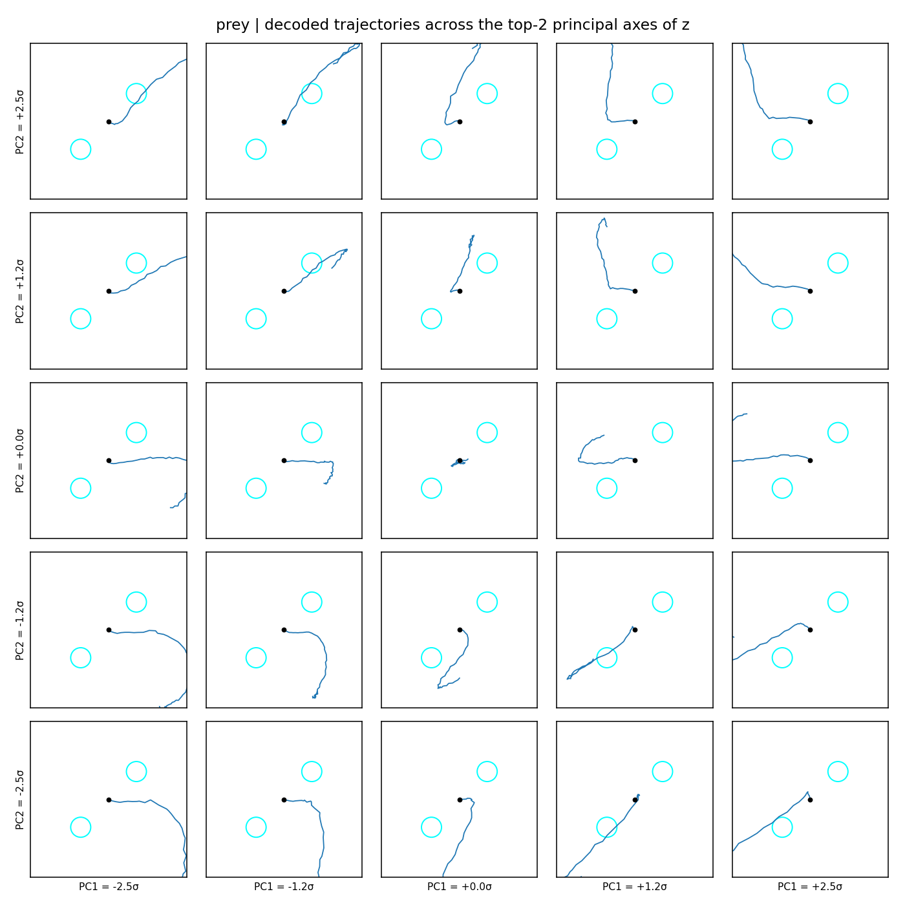
(PC1, PC2) back into a trajectory. The latent has learned the
smooth geometry of net displacement from the start — direction and shape of
the curl. (Obstacles drawn at world coordinates; the small black dot is the
prey's start, which lives at the origin in init-conditioned decode space.)
This is what the unsupervised reconstruction objective rewards: a manifold
of plausible trajectory shapes, not policy identity.
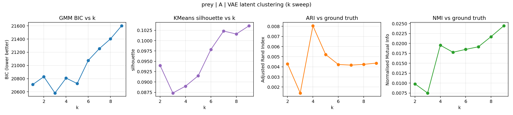
k = 3, silhouette is small at every k, and
ARI / NMI vs the 9-checkpoint ground truth stay near zero
(max ARI ≈ 0.008, max NMI ≈ 0.024). The latent organises trajectories,
but along axes orthogonal to the policy that produced them.
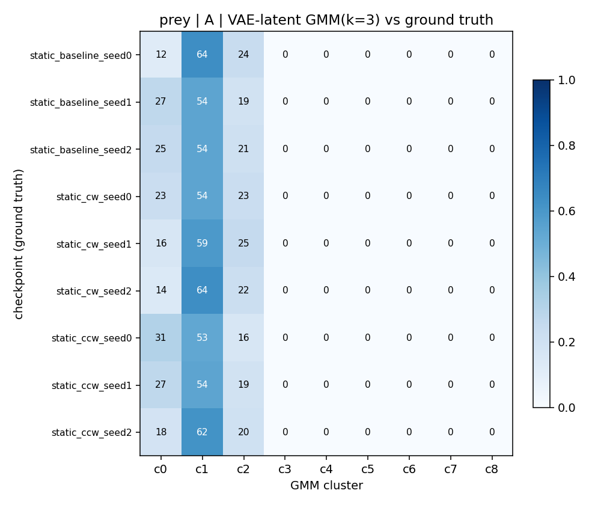
The shaping bonus is small (shape_coef = 0.1) and active only
inside the obstacle annulus. Most steps in a 50-step trajectory are
outside that annulus, where all three policies act roughly
identically — "evade the predators". The CW / CCW bias only manifests in a
small fraction of frames, and a per-trajectory model — features or VAE —
sees mostly evade-noise. Behavior mining works precisely because it pools
192 episodes per condition, averaging out the dominant evade signal to
expose the rare directional bias. That same average is unavailable in any
single rollout.
The Reading A dataset records all four agents' trajectories per episode,
so the same MLP-VAE recipe runs unchanged on
pred_0, pred_1, pred_2. Three
separate VAEs, one per predator slot. Code-wise the change is one
--agent flag:
train_traj_vae.py,
verify_vae_modes.py.
All three predator VAEs train healthily — KL settles at ~9 nats / sample, no posterior collapse, validation tracks training. The latent traversals are visibly more interpretable than the prey's: each PC1 / PC2 grid shows a smooth manifold of "head this way" trajectories rather than the prey's undirected wandering. That's consistent with predator behaviour being goal-directed (chase the prey from wherever you spawned), so the latent naturally organises along arena geometry.
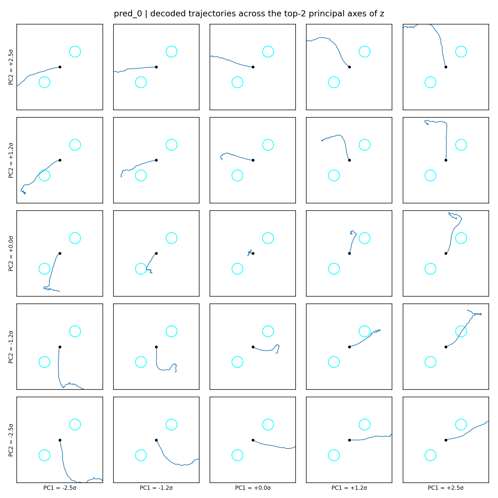
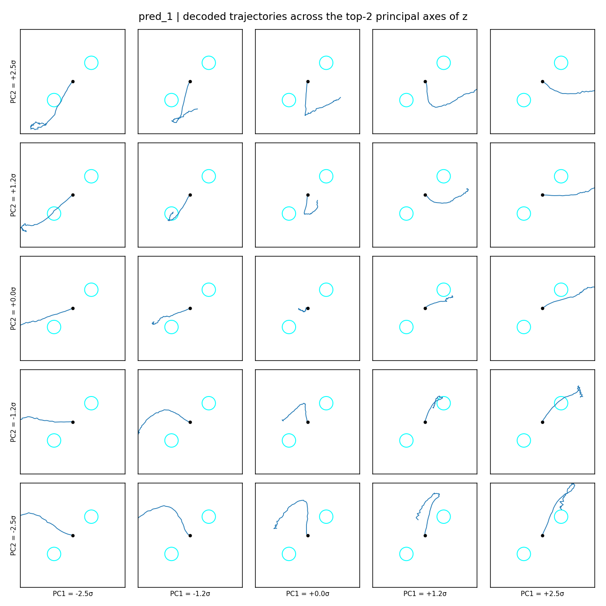
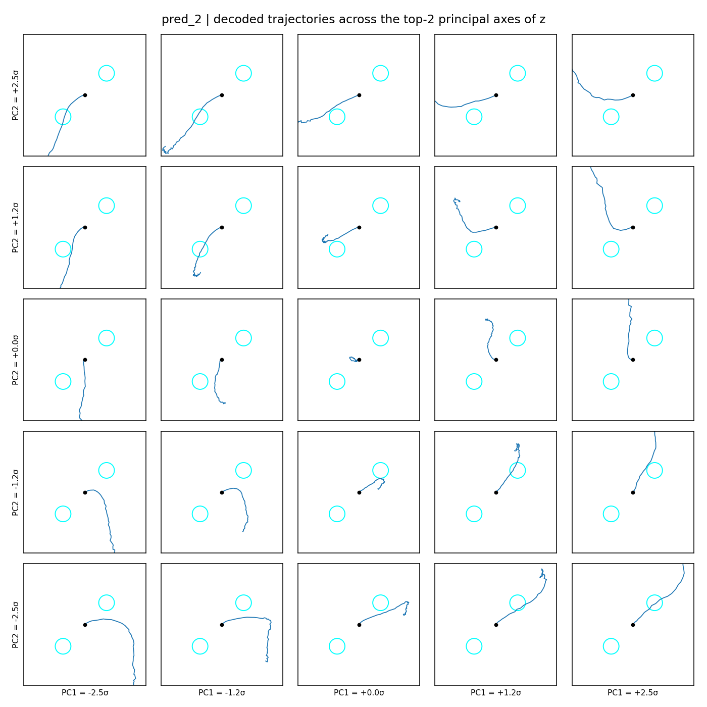
| Agent | Reading A: max ARI vs ground truth | Max NMI | Reading B: best-BIC k | BIC drop (k=1 → k_best) |
|---|---|---|---|---|
prey |
0.008 | 0.024 | 1 | ≈ 0 |
pred_0 |
0.025 | 0.061 | 4 | −750 |
pred_1 |
0.023 | 0.054 | 3 | −812 |
pred_2 |
0.017 | 0.043 | 3 | −765 |
Two patterns. Reading A: predator latents recover the 9 ground-truth checkpoints two to three times better than the prey latent does, but ARI ≈ 0.02 is still essentially at-chance — the latent is organising trajectories along arena geometry, not along the policy that produced them. Reading B: a single predator's 900 rollouts under one fixed policy are clearly multi-modal in the latent (BIC drops 700–800 nats from k = 1 to k_best ≈ 3 / 4), while the prey's are not. The predator modes track which obstacle the chase ends up around, which depends on the joint reset positions of all four agents — so even one policy produces several recurring trajectory shapes when initial conditions vary.
The original three-step plan was: (1) generate a multi-modal trajectory dataset, (2) train a VAE whose latent separates policies, (3) train behavioural cloning conditioned on that latent. Steps 2 and 3 require step 2 to actually carry policy identity in z, which it does not at this shaping strength and horizon. Two viable next moves:
shape_coef = 0.5. A wider behavioural gap between the
three variants makes the per-trajectory signal larger relative to the
evade-noise floor, regardless of which encoder is used downstream.
The shaping math is trivial but easy to get subtly wrong (sign-flip in the cross product, off-by-epsilon in the annulus, wrapper vs subclass). Five assertions in smoke_test_static.py:
r_in or outside r_out earns zero bonus.Run: python src/smoke_test_static.py
random_baseline is a 1-seed reference from Exp 1.[0.25, 0.6] are reasonable defaults, not swept.Single seed. RNN backbone. Same opp-action head as Exp 3, but on a GRU trunk. The finding — opp-awareness shifts the equilibrium toward the prey — is reproduced with error bars in Exp 3, so this version is archived.
Baseline IQL vs OA-IQL, both RNN (ScannedRNN + RNNQNetwork with HIDDEN=64), both 2 M env-steps on simple_tag_v3. With
a single seed the final numbers are within noise of each other — OA-IQL nudges both
teams up by ~2 return points at the end of training — but OA-IQL peaks higher than
baseline in predator return mid-training (~+115 vs ~+101). Opp-action classifier accuracy
plateaus around 0.53 (pred) and 0.58 (prey) — the same prey > pred asymmetry that
Exp 3 measures more precisely. The noise of 1 seed is exactly why Exp 3 was re-run with 3.
| Metric | Baseline IQL | OA-IQL | Δ |
|---|---|---|---|
| Final predator greedy return | +31.56 | +33.44 | +1.88 |
| Final prey greedy return | −47.15 | −45.19 | +1.96 |
| Predator peak (training) | ~+101 | ~+115 | +14 |
| Final opp-action accuracy | — | 0.53 / 0.58 | (pred / prey) |
| Wall-clock per run (CPU) | ~157 s | ~162 s | +3 % |
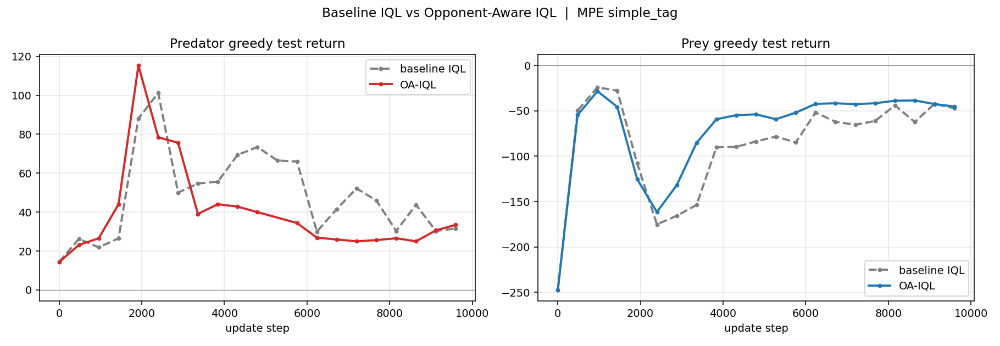
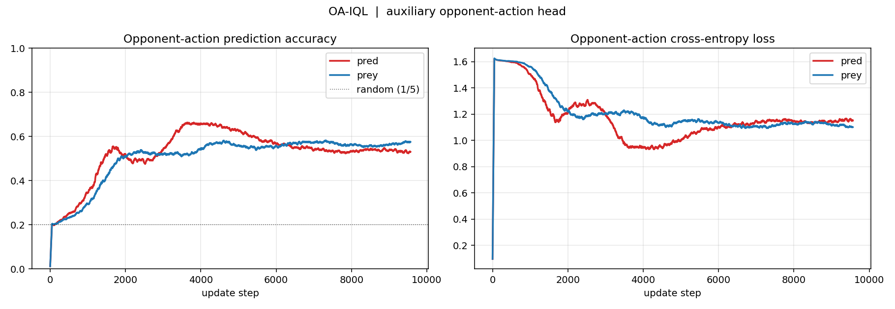
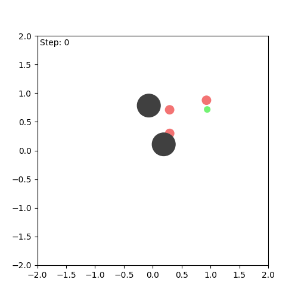
Experiment 3 reproduces the equilibrium-shift conclusion with (a) three seeds and error bars, (b) an MLP backbone (the environment is fully observable, so the RNN provides no information benefit), (c) a cross-play tournament rather than marginal learning curves, and (d) an additional planning variant. The Experiment 3 results supersede those of Experiment 1; Experiment 1 is retained for reproducibility of the original A/B.
Stock JaxMARL's parameter-sharing trick — vmap(net, in_axes=(None, 0, 0, 0))
— causes predator and prey gradients to land on the same weights in an adversarial
task, which cancels. The fix is a two-entry dict of TrainStates and a
split_teams(env) helper (iql_teams_mlp.py:76–80), with predators still sharing within-team
for sample efficiency. Per-team TrainState init: :85–250. This is the single most important ~10 lines of code in the repo.
wrapped_step, not env.step_env, in the planner
The planner rolls the simulator forward for H steps per candidate root action. It
must go through CTRolloutManager.wrapped_step(rng, state, actions) — not
env.step_env(...) — because wrapped_step preserves the observation
padding and the agent one-hot that the training pipeline applied. A day lost here
silently returned NaN on the first tournament run. The call sits at
planning_eval.py:142–144.
LogEnvState directly to wrapped_step
CTRolloutManager.batch_reset returns a LogEnvState (the outer
wrapper state). Pass that state straight through to the per-step call — not
env_state.env_state. MPELogWrapper.step already unwraps internally;
passing the inner state produces a pytree-shape mismatch and silent NaN returns.
The comment marking this is at tournament.py:80
(inside the scan at :75–91).
# Environment
python3.11 -m venv .venv && source .venv/bin/activate
pip install -e JaxMARL/ "flax==0.10.2" hydra-core flashbax wandb matplotlib
# Exp 3 — ~5 min training + ~50 s tournament (MLP, CPU)
python src/iql_teams_mlp.py alg=ql_teams_mlp_simple_tag NUM_SEEDS=3 # ~2 min
python src/iql_teams_oa_mlp.py alg=ql_teams_oa_mlp_simple_tag NUM_SEEDS=3 # ~2 min
python src/tournament.py --seeds 3 --eps 100 --K 5 --H 3 # ~50 s
python src/plot_exp3.py
# Exp 2 — ~24 min total (3 × ~8 min RNN trainings)
python src/smoke_test_static.py
python src/iql_teams.py alg=ql_teams_static_baseline NUM_SEEDS=3
python src/iql_teams.py alg=ql_teams_static_ccw NUM_SEEDS=3
python src/iql_teams.py alg=ql_teams_static_cw NUM_SEEDS=3
python src/exp2_behavior_mining.py
python src/compare_static_plots.py \
--static_baseline logs/MPE_simple_tag_v3/iql_teams_static_baseline_MPE_simple_tag_v3_seed0_metrics.npz \
--static_cw logs/MPE_simple_tag_v3/iql_teams_static_cw_MPE_simple_tag_v3_seed0_metrics.npz \
--static_ccw logs/MPE_simple_tag_v3/iql_teams_static_ccw_MPE_simple_tag_v3_seed0_metrics.npz
# Exp 1 — archived, 1 seed each, ~3 min
python src/iql_teams.py alg=ql_teams_simple_tag NUM_SEEDS=1
python src/iql_teams_oa.py alg=ql_teams_oa_simple_tag NUM_SEEDS=1
python src/compare_plots.py \
--baseline logs/MPE_simple_tag_v3/iql_teams_MPE_simple_tag_v3_seed0_metrics.npz \
--oa logs/MPE_simple_tag_v3/iql_teams_oa_MPE_simple_tag_v3_seed0_metrics.npz